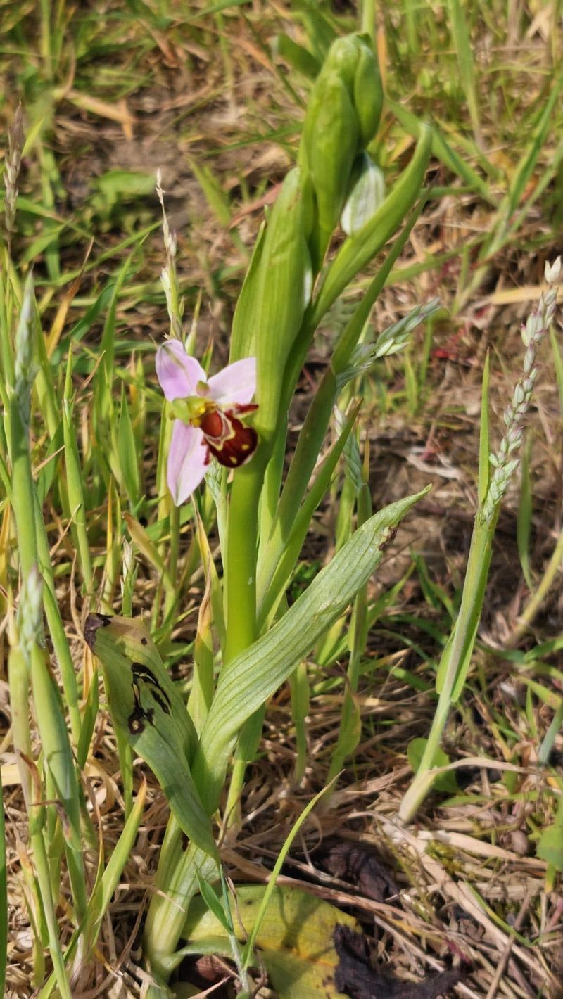
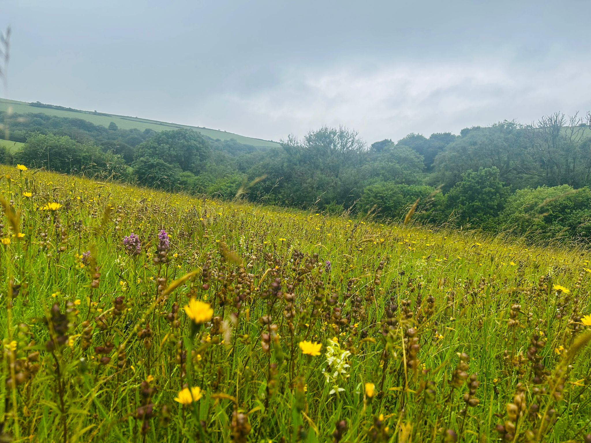

Habitat Bank · Bath & NE Somerset, West of England
Sleight Farm
A 70-hectare registered habitat bank where former grazing land is being restored into species-rich lowland meadow — delivering Biodiversity Net Gain with lasting ecological value.

Ecological recovery rarely announces itself with a single dramatic moment. At Sleight Farm, it’s revealing itself gradually — a new species here, a meadow finding its character there.
Sleight Farm is a 70-hectare registered habitat bank in South West England. Once a heavily grazed sheep and goat farm, the site is being carefully managed to allow species-rich grassland to re-establish, creating high-quality, locally available Biodiversity Net Gain for nearby development.
From grazing land to living meadow
Rather than force change, our management focuses on creating the conditions for nature to recover — letting the grasslands re-establish and reveal what remains within the site’s natural seed bank. Recent botanical surveys recorded lowland meadow indicator species — knapweed, bird’s-foot trefoil, betony, pignut — and the first bee orchid recorded on the site.
Areas once classified as modified grassland are developing the characteristics of more diverse neutral grassland, while one parcel is moving towards lowland meadow.

Ecological ambition & long-term stewardship
Every Biofarm habitat bank is secured and managed for at least 30 years. At Sleight Farm, conservation grazing by ponies and cattle, carefully timed hay cuts and green-hay spreading of locally adapted wildflower seed are building species-rich grassland with real structural diversity — supporting invertebrates, small mammals and reptiles.
Ongoing botanical and wildlife monitoring evidences the recovery — from meadow indicator species to barn owls, badgers and a juvenile tawny owl recorded on wildlife cameras.
Habitat units & types
What’s available
Sleight Farm offers 374 registered BNG units across seven habitat types. Availability and pricing by habitat are confirmed on enquiry.
| Habitat type | Broad group | Condition |
|---|---|---|
| Lowland meadow | Grassland | Good |
| Other neutral grassland | Grassland | Moderate |
| Broadleaved woodland | Woodland | Good |
| Mixed scrub | Scrub | Moderate |
| Native hedgerows | Hedgerow | Good |
| Individual trees | Trees | Good |
| Ditches | Watercourse | Moderate |
Location & areas served
Where it can help
LPAs served (trading area)
The recovery so far
A landscape finding its character
A heavily grazed farm
Sleight Farm came to us as a sheep and goat farm, with relatively species-poor grassland and limited botanical diversity.
Conservation grazing & hay cuts
We introduced conservation grazing and carefully timed hay cuts, creating the conditions for nature to recover.
Meadow indicators & a first bee orchid
Knapweed, bird’s-foot trefoil, betony and pignut recorded — and the first bee orchid on the site. Read the survey →
Owls, badgers & bullfinches
Cameras recorded barn owl, a juvenile tawny owl, badgers, fallow deer and Amber-list bullfinches. See what we found →
Green-hay spreading
Green hay from the richest areas will be spread across the site to accelerate the spread of wildflowers.
What we’ve recorded
Signs of a habitat coming to life
Bee orchid
The first recorded on the site — a strong signal of developing species-rich grassland.
Knapweed
Abundant in the area managed for lowland meadow; a characteristic meadow species.
Bird’s-foot trefoil
A lowland meadow indicator that supports pollinators across the sward.
Barn & tawny owl
Recorded on wildlife cameras — owls depend on healthy small-mammal populations.
Badger & fallow deer
Moving through a landscape that increasingly offers food, shelter and cover.
Bullfinch
On the UK’s Amber List — relies on scrub, hedgerow and woodland-edge habitat.
Photography & gallery
Sleight Farm through the seasons



Representative imagery — replace with Sleight Farm photography.
Resources
Download the detail
Overview, habitats & location · PDFDownload Ecology & monitoring report
Botanical & wildlife survey summary · PDFDownload BGS registration
Biodiversity Gain Sites Register · linkView Unit price guide
Pricing & availabilityOn request
Placeholder resources — wire to the real documents.
Enquire about units
Talk to us about Sleight Farm
Tell us a little about your scheme and we’ll come back with unit availability, habitat types and pricing.
Ready to talk units?
Secure Biodiversity Net Gain at Sleight Farm
Get in touch to discuss unit availability, habitat types, pricing and planning requirements.